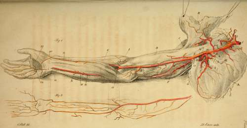

Arteries Of The Arm
Description
This section is from the book "Engravings Of The Arteries", by Charles Bell. Also available from Amazon: Engravings Of The Arteries; Illustrating The Anatomy Of The Human Body, And Serving As An Introduction To The Surgery Of The Arteries.
Arteries Of The Arm
a. The Scapula.
b. The Pectoral Muscle held up.
c. The Deltoid Muscle.
d. The Biceps Muscle.
e. The Coraco-brachialis Muscle.
f. The Triceps extensor Muscle.
g. The Teres Major.
h. The Tendon of the Lesser Pectoral Muscle.
i. The Supinator Longus.
k. The Extensor Carpi Radialis.
l. The Flexor Carpi Ulnaris.
m. The Palmaris Longus and Flexor Muscles of the Fingers.
From the Aorta till the Artery passes over the first rib, it is called,
1. The Subclavian Artery. When this artery is injected, and tolerably full, it makes two pretty acute turns, in the form of an italic S, before it escapes under the clavicle. Its larger curve is just where it comes through the anterior and middle portions of the Scalenus muscle. It then descends directly across the first rib. It then comes out under the clavicle, three fingers breadth from the inner extremity of the clavicle. Just at this point, viz. where it passes over the bulging of the rib, it may be compressed in the living body.* Its branches are,
* To cut for the Subclavian Artery, begin the incision an inch from the inner head of the clavicle; then carry it in a direction slightly deviating from the line parallel with the clavicle, towards the Acromion Scapulae. The second incision cuts the fibres of the Pectoralis Major, where they arise from the clavicle; here we come upon a thick bed of cellular membrane, which being lifted, we find the great subclavian vein, with the cephalic vein joining it; under this vein, and a little further backwards (more under the clavicle) the artery is found.
2. The Internal Mammary Artery.*
3. The Vertebral Artery.
4. The Thyroid Artery.
5. The Ascending Thyroid Artery, a branch of the last. The Transversalis Colli is also generally a branch of the Thyroid, very irregular in its origin. Sometimes it comes from the Thyroid, and then receives the name of Transversalis Humeri; sometimes it comes from the place of the Cervicalis Superfieialis, or even from the Sub scapular is; sometimes from the Subclavian itself. The Deep and Superficial Cervical Arteries.
* Branches of the Internal Mammary Artery.
1. To the Thymus,
2. Accompanying the Phrenic Nerve.
3. To the Pericardium.
4. To the Mediastinum.
5. Several branches to the Pectoral Muscle and Mamma.
6. To the Diaphragm.
7. To the Abdominal Muscles, inosculating with the Epigastric Artery. If a thrust be made with a small sword in any part (below the second rib) in a line parallel with the Sternum, and three fourths of an inch from its edge, it will wound the internal Mammary Artery.
6. The Supra Scapular Artery. The Axilla.
7. The Trunk now assumes the name of Axillary Artery. Its branches are, three or four to the chest; three to the scapula and shoulder.*
8. The Lesser Superior Intercostal Artery, or Superior Thoracic Artery.
9. The Greater or Longer Thoracic Artery, or External Mammary Artery. 10. The Thoracic a Acromialis, or Humera-ria.
* Axillary Artery. If we have to turn up the edge of the Pectoralis Major, to tie the axillary artery, we find the artery on the inside of the coraco brachialis; the external cutaneous nerve is on the outside of the artery, the radial nerve on the inside, and the muscular spiral below it; the vein is betwixt the artery and the muscle; higher up in the axilla the artery is involved in the plexus.
These descriptions of the exact seat of the arteries, are intended to enable the surgeon to avoid them as well as to cut upon them and take them up. By attending to the above circumstances, I cut a ragged ball out from behind the artery and nerves without hurting either. White's Cases by Gun-shot. Principles of Surgery, 292.
The Thoracica Maris is not in this subject.
11. The Subscapular Artery; it is seen to divide upon the edge of the Scapula, into a deeper and a more superficial branch.
12. The Posterior Circumflex Artery of the arm.
13. The Anterior Circumflex Artery of the arm. In the Arm.
14. The Trunk now assumes the name of Humeral Artery;* it gives off these branches:
* The Humeral Artery does not run a perfectly straight course down the arm. When the subject is laid on its back, the arm by the side, and the palm of the hand flat upon the table, if we push a point horizontally under the arm-bone, one hand's breadth from its head from without, the artery escapes. When in the same horizontal direction, two hand's breadth from the Extremity of the Humeral Artery. The Artery divides three fourths of an head of the bone, the artery is transfixed. Lower down the arm, it again rises towards the fore part of the humerus.
15. The Superior, or Greater Profunda.
16. The Lesser Profunda.
17. The Anastamoticus Major; the lesser anastamosing branch comes oft' higher up, and follows the same direction round the inner condyle. Arteries of the Fore Arm.
To find the Humeral Artery before passing over the elbow joint, we make the patient bend his arm against a force, to show the expansion of the biceps. Having marked its place, we put the arm into a relaxed position, and make an incision along the inner edge of the biceps, or rather, we might say, just where it begins to throw off its tendinous expansion, two fingers' breadth from the inner condyle of the os humeri, carrying it upwards. We find here not immediately the artery, but the radial nerve covering the artery; laying this aside, we find the artery lying betwixt its two venae comités.
I have found on dissection, that the surgeon had included the radial nerve in the ligature of the humeral artery. I have also found that he had put the ligature about the radial nerve, mistaking it for the humeral artery.
inch below the part of the Me dean Basilic Vein, where we generally bleed.
18. 18. The Radial Artery.
19. 19. The Ulnar Artery.
The Interosseous Artery, which divides into the Inner and Outer Interosseous.
The Recurrent Arteries from these last are, the Recurrens Radialis Anterior.
Recurrens Ulnaris Anterior.
Mecurrens Ulnaris Posterior.
Jiecurrens Interossea. 20. At this point the Radial Artery turns under the supinator tendon and extensor tendons of the thumb.* •
* To find the Radial Artery in its course one-third down the arm, cut on the outer edge of the supinator longus, first through the third fascia—then lift the edge of the muscle, and under the second fascia you find the radial artery, passing over the tendon of the pronator teres.
1. To take up this artery on the wrist, we cut a quarter of an inch from the radial edge of the Flexor Carpi Radialis. n. B. The insertion of the Supinator Radii Longus is on the outside, but flat, giving no mark outwardly. The Extensor Primi Internodii Policis comes obliquely over the head of the Radius, and the insertion of the Supinator.
Superficial Artery of the Palm. 21. The Ulnar Artery passing over the wrist.* Dor salts Ulnaris.
A fascia covers the artery here. A small nerve (from the external cutaneous) runs above the fascia.
2. To cut for the Radial Artery, when it has passed from the fore part of the wrist, we carry the knife on the outside of the insertion of the Extensor Radialis Longior, and the inside ol the Extensor Tertii Internodii Policis. Betwixt these tendons the artery lies very deep, and over it the extreme branch of the Muscular Spiral Nerve.
* Ulnar Artery.
1. In the middle of the fore arm the artery lies under the fascia, and under the margin of the Flexor Ulnaris and Flexor Digitorum Sublimis, rather more under the margin of the last. To tie the artery, we would have to cut down betwixt these muscles. The Ulnar JVerve lies on the ulnar edge of the artery.
2. To cut for the Ulnar Artery near the wrist. We carry the knife upon the inside of the Flexor Ulnaris Carpi; we raise the fascia, which binds down the tendon; but still Ave have another layer of the fascia, under which the artery and its Vena Comites lie. The nerve is lying still more under the tendon of the ulnaris than the artery, but close upon it.
Ulnar Artery tied for wound of the palm. Principles of Surgery, 183.
From this Sketch of the Arteries we can follow in idea their continued course among the muscles.
Arteria Palmaris Profunda Ulnaris.
22. The Great Palmar Arch, from which the Arteries of the fingers are seen to proceed.
23. This dotted line marks the seat of the Lesser Arch under the tendons.
Continue to: